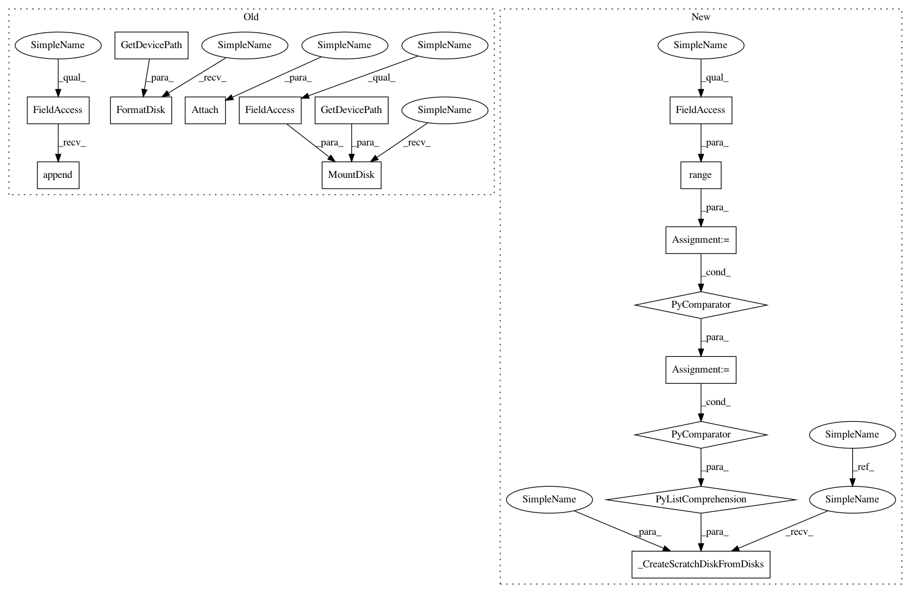

874170dad8d905dcae3513b7a9cf7f95803480a2,perfkitbenchmarker/providers/openstack/os_virtual_machine.py,OpenStackVirtualMachine,CreateScratchDisk,#OpenStackVirtualMachine#Any#,166
Before Change
def CreateScratchDisk(self, disk_spec):
name = "%s-scratch-%s" % (self.name, len(self.scratch_disks))
scratch_disk = os_disk.OpenStackDisk(disk_spec, name, self.zone)
self.scratch_disks.append(scratch_disk)
scratch_disk.Create()
scratch_disk.Attach(self)
self.FormatDisk(scratch_disk.GetDevicePath())
self.MountDisk(scratch_disk.GetDevicePath(), disk_spec.mount_point)
def _CreateDependencies(self):
self.ImportKeyfile()
After Change
if self.hostname is None:
self.hostname = resp[:-1]
def CreateScratchDisk(self, disk_spec):
disks_names = ("%s-data-%d-%d"
% (self.name, len(self.scratch_disks), i)
for i in range(disk_spec.num_striped_disks))
disks = [os_disk.OpenStackDisk(disk_spec, name, self.zone)
for name in disks_names]
self._CreateScratchDiskFromDisks(disk_spec, disks)
def _CreateDependencies(self):
self.ImportKeyfile()
In pattern: SUPERPATTERN
Frequency: 3
Non-data size: 16
Instances
Project Name: GoogleCloudPlatform/PerfKitBenchmarker
Commit Name: 874170dad8d905dcae3513b7a9cf7f95803480a2
Time: 2015-12-03
Author: carlos.torres@rackspace.com
File Name: perfkitbenchmarker/providers/openstack/os_virtual_machine.py
Class Name: OpenStackVirtualMachine
Method Name: CreateScratchDisk
Project Name: GoogleCloudPlatform/PerfKitBenchmarker
Commit Name: df4ac0ed8a1f42b864b49d45056ad8dc95b3510c
Time: 2015-12-08
Author: carlos.torres@rackspace.com
File Name: perfkitbenchmarker/providers/openstack/os_virtual_machine.py
Class Name: OpenStackVirtualMachine
Method Name: CreateScratchDisk
Project Name: GoogleCloudPlatform/PerfKitBenchmarker
Commit Name: 7020cb0dbd646a9a5dfc88aed62696507ab45c3e
Time: 2015-05-08
Author: ehankland@google.com
File Name: perfkitbenchmarker/gcp/gce_virtual_machine.py
Class Name: GceVirtualMachine
Method Name: CreateScratchDisk
Project Name: GoogleCloudPlatform/PerfKitBenchmarker
Commit Name: 874170dad8d905dcae3513b7a9cf7f95803480a2
Time: 2015-12-03
Author: carlos.torres@rackspace.com
File Name: perfkitbenchmarker/providers/openstack/os_virtual_machine.py
Class Name: OpenStackVirtualMachine
Method Name: CreateScratchDisk